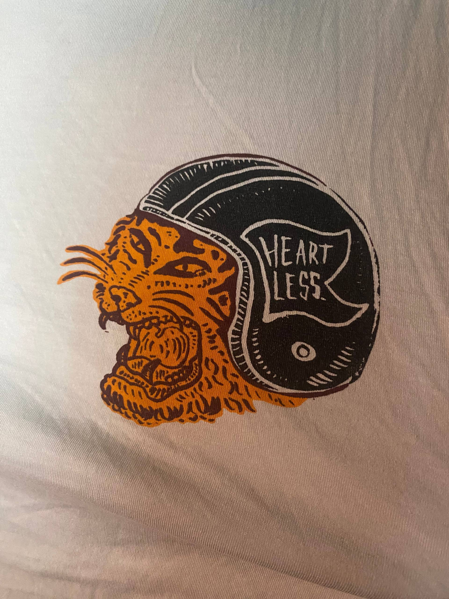

Документация опытов, наблюдений и трансформаций
Читать дневникПиковое состояние. Фиксация изменений в восприятии цвета и пространства. Мысли скачут, физическое напряжение нарастает.
Королевские шляпки. Глубокое погружение. Фокус полностью сместился внутрь, внешний мир стал лишь декорацией. Анализ внутренних процессов.
Мягкое воздействие, анализ и ровное течение мыслей. Снижение внутреннего диалога.
Интенсивная энергетика, резкость и хаос. Требует предельной концентрации внимания.
Глубокое погружение, визуальные паттерны и изменение восприятия вязкости времени.